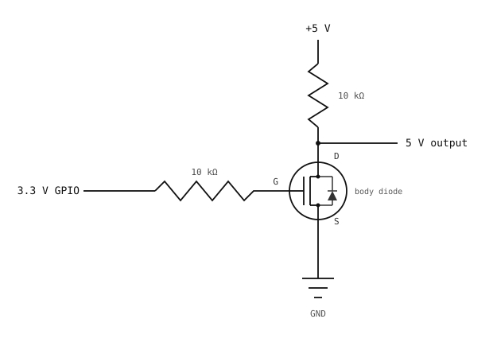

3.8. Posun napěťových úrovní¶
GPIO pin na kameře vytváří přibližně 3,3 V, když je ve stavu high. Zařízení na druhé straně může pracovat při 5 V (starší mikrokontroléry, mnoho senzorových desek) nebo 1,8 V (novější senzory, některé sběrnice mezi čipy). Přímé propojení obou stran je někdy bezpečné a někdy ničivé; posun napěťových úrovní je obvod, který tuto mezeru spolehlivě překlene.
3.8.1. Proč může přímé buzení napětím napříč úrovněmi poškodit pin¶
Vstupně-výstupní pad každého čipu má dvojici vestavěných ochranných diod: jednu z pinu na zem a jednu z pinu na napájecí větev čipu. Slouží k pohlcení elektrostatického výboje (ESD) – krátkého vysokonapěťového impulzu ze statické elektřiny, který může pin zasáhnout při manipulaci s deskou. Člověk, který přešel po koberci, může nést několik kilovoltů statické elektřiny; dotek nesprávného pinu přenese tento náboj do čipu během nanosekund. Horní ochranná dioda se otevře v propustném směru a bezpečně odvede impulz do napájecí větve dříve, než dosáhne tranzistorů uvnitř čipu.
Pokud je signál 5 V přiveden trvale na 3,3V pin, který není 5V-tolerantní, horní ochranná dioda vede nepřetržitě. Diody jsou dimenzovány na krátké ESD impulzy, nikoli na ustálený proud; napájecí větev začne stoupat nad 3,3 V, dioda se zahřívá a buď selže pin, nebo on-chip napěťový regulátor.
5V-tolerantní piny používají odlišný vstupní stupeň – horní dioda vede na vyšší větev nebo zcela chybí – takže přivedení 5 V je neškodné. Zda jsou piny dané desky 5V-tolerantní, se liší podle desky; viz Stručná referenční příručka OpenMV Cam.
Opačný směr má svůj vlastní problém. GPIO ve stavu 3,3 V high vytváří na vodiči ~3,3 V. Přijímač pracující s 5 V, který potřebuje 0.7 × Vcc k rozpoznání úrovně high, má svůj práh na 3,5 V; 3,3 V může číst jako low nebo jako nejednoznačnou hodnotu. I bez poškození tedy signál nepracuje spolehlivě.
Posuvník úrovní řeší oba směry.
3.8.2. N-MOSFET jako spínač¶
Níže uvedené obvody používají jeden N-kanálový MOSFET. Má tři piny – gate, drain a source – a chová se jako elektricky řízený spínač.
Řídicím vstupem je napětí mezi gate a source, zapisované jako Vgs (napětí gate-source):
Vgs = (gate voltage) - (source voltage)
MOSFET reaguje na tento rozdíl, nikoli na absolutní napětí na kterémkoli z pinů samostatně. Jeho chování vyplývá z Vgs:
Když je
Vgsnad prahovým napětím MOSFETu (typicky kolem 1 V pro malosignálovou součástku na logické úrovni), tranzistor se zapne a proud volně teče z drain do source.Když je
Vgsna hodnotě 0 nebo nižší, tranzistor se vypne a z drain do source neteče téměř žádný proud.
Cesta drain-source je spínaná proudová cesta; Vgs tento spínač otevírá nebo zavírá.
N-MOSFET má také body diodu mezi drain a source, která vede, když je drain stažen pod source o více než ~0,6 V. Tato dioda je vedlejším produktem výroby; níže uvedený obousměrný posuvník ji využívá záměrně.
3.8.2.1. Pravidla zapojení¶
N-MOSFET není symetrická tříelektrodová součástka. Body dioda směřuje od source (anoda) k drain (katoda) a kanál řídí Vgs. Z toho plynou dvě pravidla, která musí platit pro každý spínací obvod s N-MOSFETem:
Source vede na nižší napětí; drain na vyšší. S drain na vyšší větvi je body dioda v závěrném směru a nic nedělá. Prohoďte je a body dioda je trvale v propustném směru: proud teče z nyní vyššího source přes body diodu do nyní nižšího drain bez ohledu na to, co dělá gate. MOSFET přestává být spínačem – nepřetržitě protéká, signál nelze vypnout a součástka se často přehřeje a selže.
Gate je připojen k napěťové větvi source. Udržováním gate na úrovni, na které source v klidu spočívá, je v nečinnosti
Vgs = 0, výrazně pod prahem; MOSFET zůstává spolehlivě vypnutý, dokud něco buď nevyžene gate nad source (jednosměrný obvod níže), nebo nestáhne source pod gate (obousměrný obvod). Nechte gate plovoucí jinde a vypnutý stav přestane být definovaný – šum, svodový proud nebo parazitní kapacita mohou posunoutVgsnad práh a MOSFET náhodně zapnout.
Porušení kteréhokoli pravidla mění posuvník úrovní na netěsnou, nespolehlivou cestu. Oba níže uvedené obvody posuvníků dodržují tato pravidla: source na nižší straně, drain na vyšší, gate připojen nebo buzen z větve source.
3.8.3. Jednosměrný 3,3 V → 5 V¶
Nejjednodušší posuvník úrovní přenáší jednosměrný signál z GPIO kamery na 5V vstup. Postačí jediný N-MOSFET a dva rezistory.

N-MOSFET posouvá úroveň (a invertuje) signálu 3,3 V na výstup 5 V.¶
Když GPIO budí stav high (3,3 V na gate), Vgs je nad prahem a MOSFET se zapne; drain je stažen na ~0 V. Když GPIO budí stav low (0 V na gate), MOSFET je vypnutý a vytahovací rezistor 10 kΩ přivede drain na 5 V.
Výstup je inverzí vstupu. Software může signál opět obrátit (zapsat 0 pro „5V výstup high“), nebo zřetězit dva stupně a získat neinvertovaný signál za cenu dvojnásobného počtu součástek.
3.8.4. Obousměrný s jedním N-MOSFETem¶
Pro linku, která musí být buzena z kterékoli strany – sdílenou sběrnici, kde kterýkoli konec může linku stáhnout na low – je standardním obvodem jediný N-MOSFET na linku s jedním vytahovacím rezistorem na napájení každé strany.

Jediný N-MOSFET přemosťuje linku 3,3 V a 5 V; každá strana má svůj vlastní vytahovací rezistor.¶
Gate je připojen na napájení 3,3 V, takže chování MOSFETu závisí na tom, která strana budí:
Obě strany v klidu. Source spočívá na 3,3 V přes levý vytahovací rezistor; gate je na 3,3 V;
Vgs = 0; MOSFET je vypnutý. 5V strana je vytažena na 5 V pravým vytahovacím rezistorem. Obě strany čtou high.3,3V strana stahuje na low. Source klesne na 0 V;
Vgsstoupne nad práh; MOSFET se zapne a vede z source do drain. 5V strana je přes tranzistor stažena na low.5V strana stahuje na low. Drain klesne na 0 V; body dioda MOSFETu (drain na source) se otevře v propustném směru a vede; source (3,3V strana) je stažen přibližně na 0,6 V.
Vgspoté překročí práh a MOSFET se plně zapne, čímž obě strany dostane na low.
BSS138 je standardní N-MOSFET pro toto zapojení; malosignálové N-MOSFETy na logické úrovni s podobnými prahovými napětími gate se zde všechny chovají stejně.